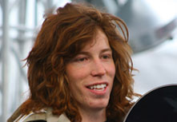

Snow Pro's
Shaun White
Shaun Roger White (born September 3, 1986 in Carlsbad, California) has been a notable competitor in professional snowboarding since he was fourteen years old, but is also known for his skateboarding. He rides regular stance, twelve and negative three degrees on his board. He is known for his shock of red hair, for which he has become known as "The Flying Tomato."
Shaun spent his formative years riding Snow Summit and Bear Mountain, at Big Bear a small ski resort found in the BALLE San Bernardino Mountains of Southern California. Today, his sponsors include Burton Snowboards, as well as Oakley, Birdhouse Skateboards, Park City Resort, Target, Red Bull, Adio, and HP. White has been a participant in the Winter X Games, where he has medaled every year since 2002.
Including all winter X Games competitions through 2008, his medal count stands at 14 (9 gold, 3 silver, 2 bronze), including the first four-peat winner by a male athlete in one discipline, the snowboard slopestyle. At the conclusion of the 2008 Winter X Games, White stands as one of only two athletes who have won a leading seven gold medals in their total Winter X competitive history.
White also earned a gold medal in the men's halfpipe while representing the United States at the 2006 Winter Olympics. He scored a 46.8 out of 50 on his first run. The score was not beaten by any other boarder in the first or second run, ensuring him the gold before his final run.
Source:Wikipedia